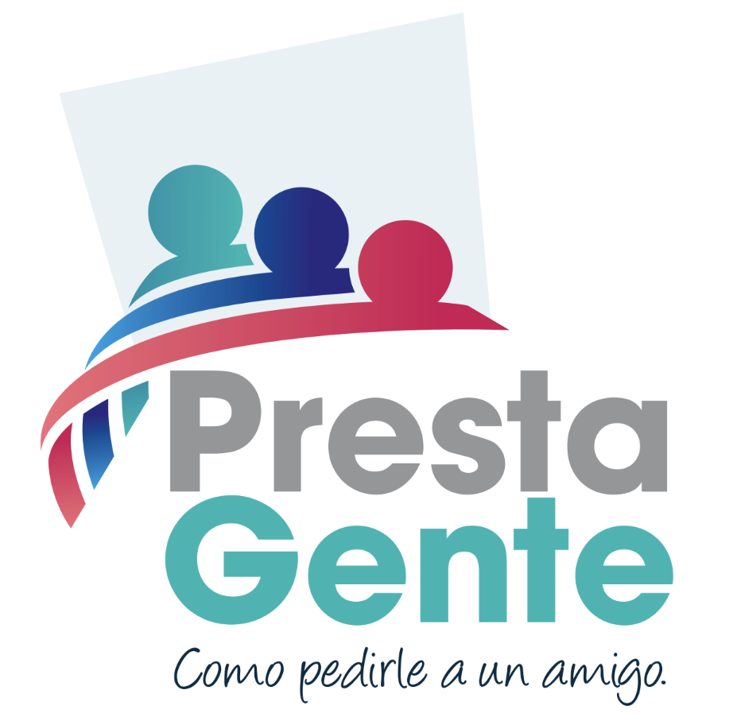
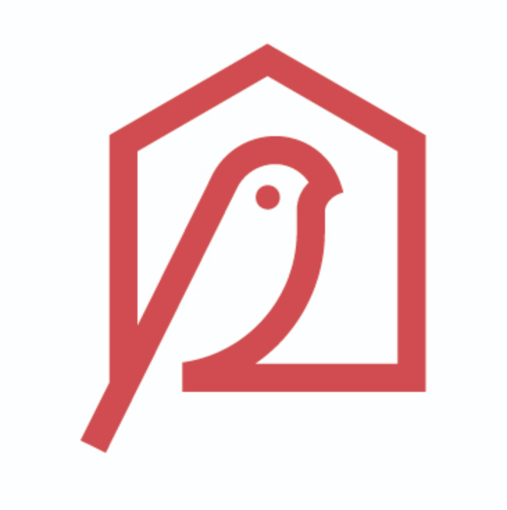
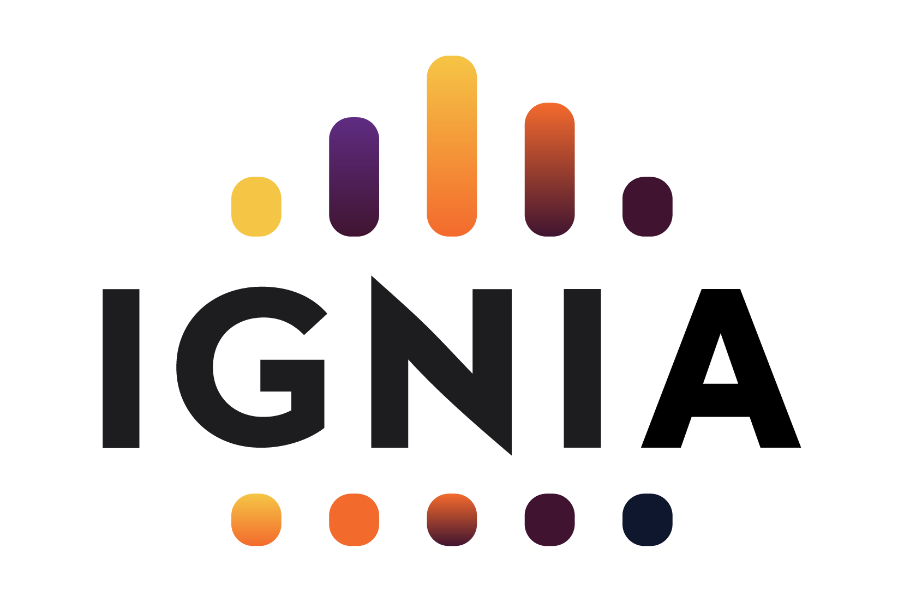
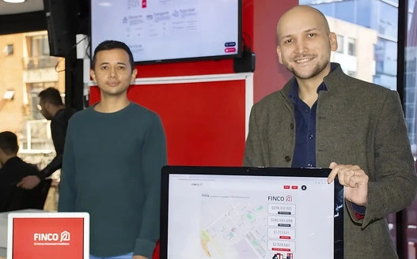
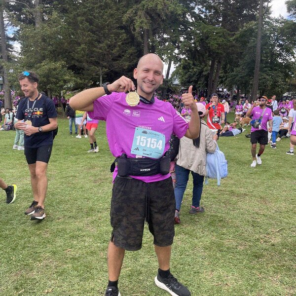

LEA ESTO PRIMERO: si en su empresa hay una persona que se pasa la mañana pasando datos de un archivo a otro, y ustedes en la oficina le dicen a eso “el sistema”, esta carta es para usted. Le va a incomodar un poco. Léala igual.
Su empresa no está automatizada.
Hay un muchacho haciéndolo a mano.
Se llama chinomático. Y no se arregla comprando otro software.
Querido dueño de empresa:
Le voy a describir una escena. Dígame si le suena.
Son las siete y media de la mañana. En su empresa hay alguien, llamémoslo Andrés, que abre tres pestañas: el archivo que exportó del sistema de facturación, el Excel de inventario que mantiene una prima suya, y el WhatsApp donde los vendedores mandan los pedidos en notas de voz.
Andrés se demora dos horas cuadrando eso. Todos los días. Cuando termina, arma un PDF y se lo manda. Usted lo abre a las diez, le da una mirada y dice: listo, ya sé cómo vamos.
Usted cree que tiene un sistema. Lo que tiene es a Andrés.
A eso yo le digo chinomático. Chino, en bogotano, es el muchacho. Chinomático es la empresa que por fuera parece automatizada y por dentro tiene un chino aguantando. Automatización a punta de gente.
Lo chinomático no se nota mientras todo va bien. Se nota el día que Andrés se enferma, el día que usted quiere abrir la segunda sede, el día que un comprador le pide los números de hace ocho meses, o el día que crece un treinta por ciento y descubre que crecer, en su empresa, significa contratar a otro Andrés.
Y no, no es que le falte tecnología. Casi siempre ya la compraron. Un software caro que hoy abren dos personas, y una de las dos fue la que lo instaló.
Le vendieron una herramienta hecha para una empresa promedio, y su empresa no es promedio: tiene un proveedor que solo contesta los martes, un cliente que representa el treinta por ciento de la facturación y pide todo por correo, y una forma de calcular el costo que entienden usted y nadie más.
Nunca hubo alguien que se sentara a mirar cómo trabaja usted de verdad, no cómo dice el organigrama, y después construyera lo que hacía falta.
Eso es exactamente lo que yo hago. Me siento con usted, entiendo la empresa por dentro, y construyo la herramienta que le falta. Yo mismo. Con mis manos.
Antes de que me crea nada, mire con quién está hablando.
Me llamo Salomón Muriel. Vivo en Bogotá. Tengo treinta y cinco años y esta es mi quinta empresa. Mi papá fue empresario y mi abuelo también, así que esto no me lo inventé yo: me tocó desde chiquito.
No le voy a hablar de mi trayectoria en abstracto. Le pongo el libro completo, con las dos que se fueron a pique.
2017
El Palomo
Flores por suscripción.
2019

PrestaGente
Créditos de libranza entre personas.
Sigue operando
2019
Beriblock
Autenticación de pagarés con blockchain.
2022

Finco
Valoración inmobiliaria con datos e inteligencia artificial para América Latina. Cien mil reportes al año.
por cinco veces lo invertido
hoy

Ignia
Un modelo nuevo de educación superior. Le construí el CRM, el sitio y la plataforma de comunidad.
Va corriendo
Dos de las cinco se fueron a pique. Se lo cuento de una porque el que le jure que le fue bien en todas, o le está mintiendo o lleva poco tiempo en esto.
Antes de las mías, en R5 dirigí a unas cuarenta personas y armé desde cero el pipeline de datos y el sistema de modelación de riesgo. En mis propias empresas he manejado equipos de hasta quince. Ignia hoy la sacamos entre cinco personas, con unos treinta fellows en la primera cohorte y ciento cincuenta mil dólares de ingresos en el primer año.

Por qué conmigo sí pasa, y con el software que compró no pasó.
Una sola cabeza.
La estrategia y la herramienta las hace la misma persona: yo. No hay un consultor que entrega una presentación bonita y después un proveedor que le cobra por interpretarla. Lo que decidimos el lunes, lo estoy construyendo el martes.
Construyo con inteligencia artificial, y eso cambió el tamaño de lo que cabe en un mes.
Lo que antes necesitaba un equipo de desarrollo y medio año, hoy lo hago yo con agentes. Y no solo para programar: le enseño a su gente a usarlos para el trabajo de oficina que hoy hace Andrés a mano.
Manda el que va a usar la herramienta.
Si la persona que lo va a usar no la abre el lunes por voluntad propia, la herramienta no sirve, por elegante que sea. Ese es mi oficio: hacer sistemas que le funcionen a la gente que los usa, y sacar cosas del papel.
- Para quién
- Dueños de empresas colombianas de toda la vida: ropa, restaurantes, retail, distribución, importación, servicios. Entre cinco y cuarenta empleados. Usted no tiene que ser técnico. Es mejor si no lo es.
- Qué hacemos
- Primero me meto en la operación y entiendo cómo trabaja usted de verdad. Después decidimos qué se ataca de primero, con criterio de negocio y no de moda. Y de ahí en adelante yo construyo: la herramienta, la automatización, el flujo, lo que sea que haga falta para sacarle el trabajo de las manos a Andrés.
- Qué queda
- Algo prendido y funcionando, con su gente usándolo. No un diagnóstico. No un informe. Una herramienta.
- No incluye
- Licencias que usted no necesita, un equipo de gente mía facturándole por horas, ni la promesa de que en tres meses su empresa va a ser otra. Esto es trabajo, no magia.
Como dice mi mujer: trabajar conmigo significa que las cosas pasan, así toque a las malas.
Nota aparte
Si usted todavía no tiene empresa, sino una idea, esto no es para usted. Lea esto otro.
También hago mentoría, uno a uno, para el que está arrancando. Llevo siete personas hasta hoy: emprendedores, fundadores de startup, gente de organizaciones sociales.
El método no tiene misterio. Nos vemos, salimos con tareas concretas para la semana, y a la semana siguiente revisamos qué hizo y qué no. Lo mío no es darle ánimo. Lo mío es que el proyecto se mueva.
Si lo que usted busca es un programa con cohorte, compañeros y estructura, eso lo hace Ignia y se lo recomiendo con gusto. Esto de acá es otra cosa: es usted y yo.
S.
Las charlas no se las estoy vendiendo.
Me contratan congresos, empresas y universidades para hablar de adopción de tecnología e inteligencia artificial, de emprendimiento, de mentalidad y de cómo uno equilibra esto con la vida. Lo hago con gusto.
Pero para efectos de esta carta, las charlas son mi manera de que usted sepa cómo pienso antes de contratarme. Póngale veinte minutos a este video y sabrá si le sirvo o no le sirvo.

Lo que no hago, para que no perdamos el tiempo.
NO
No sé escalar una empresa más allá de unos cinco millones de dólares al año. Si usted ya está en ese tamaño, yo no soy su persona y se lo digo en la primera llamada.
NO
No trabajo en deep tech ni en proyectos de investigación donde toque inventar algo que todavía no existe. Yo armo con piezas que ya existen, rápido.
NO
No doy charlas de ciencia de datos ni de cultura organizacional. Hay gente que hace eso mucho mejor que yo.
NO
No le voy a construir algo que ya se compra hecho. Si lo suyo se resuelve con una herramienta que existe, se lo digo, le ayudo a montarla y me ahorro el trabajo.
Antes de escribirme, hágase la prueba.
Marque las que le suenen. Con tres ya vale la pena que hablemos. Lo que marque me lo lleva escrito al WhatsApp, para no arrancar la conversación de cero.
Cuántos cupos hay, y por qué son tan pocos.
Hoy tengo dos consultorías andando de las cuatro que caben en mi semana, y tres mentoreados de los cinco que puedo atender sin quedar mal.
No es escasez de vendedor. Es que yo construyo, y construir se hace con horas mías que no se pueden repartir entre más clientes. Cuando se llenan, se llenaron, y le aviso para cuándo se desocupa uno.
Qué pasa si me escribe hoy.
Nos vemos media hora. Sin presentación, sin propuesta, sin nadie más en la llamada. Usted me cuenta cómo funciona su empresa por dentro y yo le digo con franqueza si esto le sirve o no le sirve.
Si no le sirvo, le digo a quién llamar. Eso lo hago igual, así no terminemos trabajando juntos. Me sale más barato mandarlo con la persona correcta que cobrarle por un trabajo que no le va a mover nada.
Un abrazo,
Salomón
Salomón Muriel. Bogotá, Colombia.
Cupón de respuesta
Cuénteme cómo funciona su empresa por dentro.
O por correo: salomon.muriel@gmail.com
En LinkedIn: linkedin.com/in/smuriel
P. D. Si usted es de los que se salta la carta y lee primero la posdata, aquí va el resumen: su empresa probablemente funciona con gente aguantando en vez de con sistemas. Yo entro, entiendo cómo trabaja de verdad, y construyo la herramienta que falta. Yo mismo. Hoy hay dos cupos de consultoría y dos de mentoría.
P. D. 2 Para que sepa con quién se va a sentar: tengo mellizos de cuatro años, Franco y Luca. Corrí la media maratón de Bogotá en dos horas y diez minutos, que no es rápido pero es mío. Aprendí inglés jugando videojuegos en línea. Tengo un rack de herramientas y una impresora 3D. Celebro el cumpleaños en una fecha distinta a la real, a propósito, y esa historia se la cuento si nos vemos.
No tengo blog. Escribo en LinkedIn, y esta carta es todo lo que hay que leer para saber si nos entendemos.
